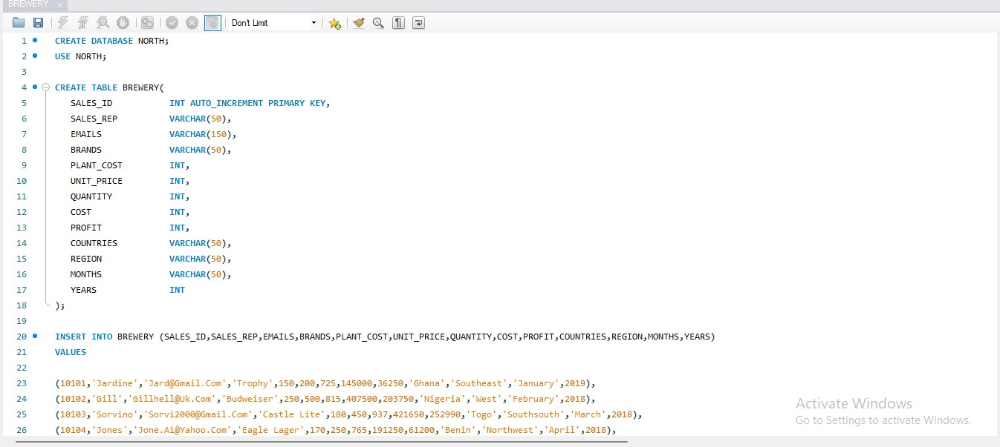
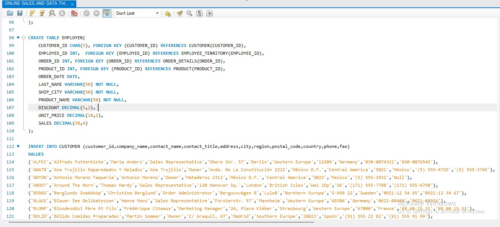
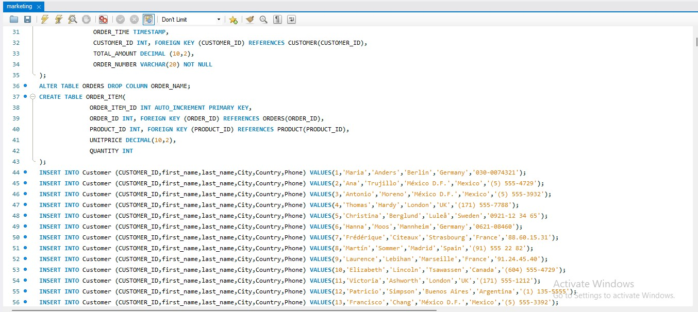
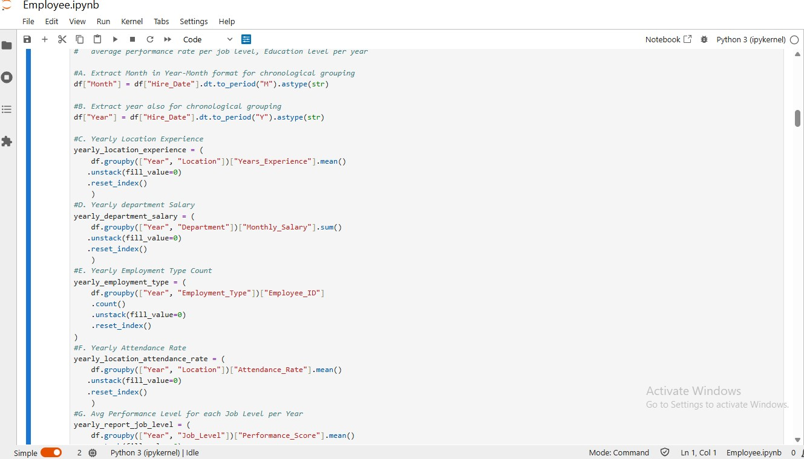
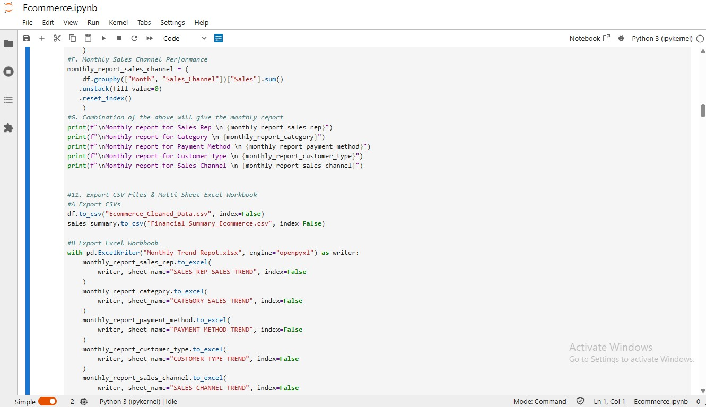

An end-to-end healthcare analytics project involving data preparation in Excel, transformation and modeling in Power BI, and the development of
DAX-driven interactive dashboards. The report explores patient demographics, clinical patterns, healthcare costs, hospital operations, and
patient outcomes.
Tools: Excel · Power Query · Power BI · DAX
Skills: Data Cleaning · Data Transformation · Data Modeling · DAX · KPI Development · Data Visualization · Drill-through Reporting

An Excel-based analysis of crop performance across seasons, locations, soil types, irrigation conditions, and environmental factors.
The project involved data preparation, derived performance metrics, PivotTables, interactive slicers, conditional formatting, visual
analysis, and the development of four analytical dashboards.
Tools: Excel
Skills: Data Analysis · Excel Functions · PivotTables · Data Visualization · Dashboard Development · Derived Metrics · Interactive Filtering

Analyzed brewery sales data across multiple countries using SQL to answer business and performance-related questions. The project involved
writing SQL queries to explore sales patterns, compare performance between countries, identify top-performing products and regions, and
generate insights from transactional data. Using SQL, I performed data filtering, sorting, aggregation, grouping, and conditional analysis
to solve a variety of business problems and extract meaningful information from the dataset. The analysis supported decision-making by
uncovering trends in sales activities, product performance, and regional operations across different locations
Key Skills: SQL • QL Server/MySQL • Database Design • Relational Databases • DDL/DML • Queries
Tools: SQL • Data Analysis • Aggregate Functions • GROUP BY • ORDER BY • WHERE • HAVING • CASE Statements

Designed and created a multi-table relational database to organize and track company sales and employee records. The project focused on structuring
business data into separate tables, defining appropriate fields and data types, and establishing relationships between relevant records. I used SQL
to create and manage the database structure and populate it with company information. The database demonstrates my understanding of relational
database design, table creation, primary and foreign keys, data types, constraints, and SQL data manipulation. The project was designed as a
practical company database that could serve as a foundation for tracking business transactions and employee information while keeping records
organized and accessible for future analysis.
Tools: SQL Server/MySQL • Database Design • Relational Databases • DDL/DML • Queries
SQL Skills: Database Design • Table Creation • Data Types • Primary Keys • Foreign Keys • Constraints • Data Manipulation • Data Analysis •
Aggregate Functions • Filtering • Sorting • Grouping • Conditional Logic

Created a SQL-based marketing sales tracking database designed to organize and monitor sales-related information from marketing activities. The project focused on
structuring sales records into a relational database and using SQL to create, manage, and analyze the stored information. I worked with multiple tables and applied
appropriate data types, keys, and constraints to maintain an organized and reliable dataset. The database provides a foundation for tracking sales activity,
customer-related information, transactions, and marketing performance, allowing business data to be stored in a structured format for future analysis and reporting.
Tools: QL Server/MySQL • Database Design • Relational Databases • DDL/DML • Queries
Key Skills: SQL • Relational Database Design • Table Creation • Data Types • Primary & Foreign Keys • Constraints • Data Manipulation • Sales Data Management

Conducted an exploratory data analysis of employee-related data using Pandas, NumPy, Matplotlib, Seaborn, and date/calendar functions. The analysis focused on
identifying patterns and relationships within employee records through data cleaning, statistical exploration, time-based analysis, and visualization. I
created line, bar, and pie charts, as well as a correlation heatmap, to examine different aspects of the employee data. Each visualization was accompanied
by relevant insights and recommendations derived from the analysis. The final outputs included cleaned datasets and summarized analytical results exported into
reusable CSV and Excel files.
Python Tools: Pandas • NumPy • Matplotlib • Seaborn
Skills: EDA • Data Cleaning • Data Transformation • Time-Series Analysis • Data Visualization • Correlation Analysis • Business Insights & Recommendations

Performed an end-to-end exploratory data analysis (EDA) of an e-commerce dataset using Python, Pandas, NumPy, Matplotlib, Seaborn, and Python's calendar/date functionality. The
project involved cleaning and preparing the data, analyzing transaction and financial patterns, and investigating business performance over time. I created monthly and yearly
trend analyses to identify changes in different business activities. I developed multiple visualizations, including line charts, bar charts, pie charts, and a correlation heatmap,
and provided insights and recommendations based on the findings from each visualization. I also exported: Cleaned data as a CSV file Financial and transaction summary as CSV
files Monthly and yearly trend analyses as a multi-sheet Excel workbook.
Python Tools: Pandas • NumPy • Matplotlib • Seaborn
Skills: EDA • Data Cleaning • Data Transformation • Time-Series Analysis • Data Visualization • Correlation Analysis • Business Insights & Recommendations